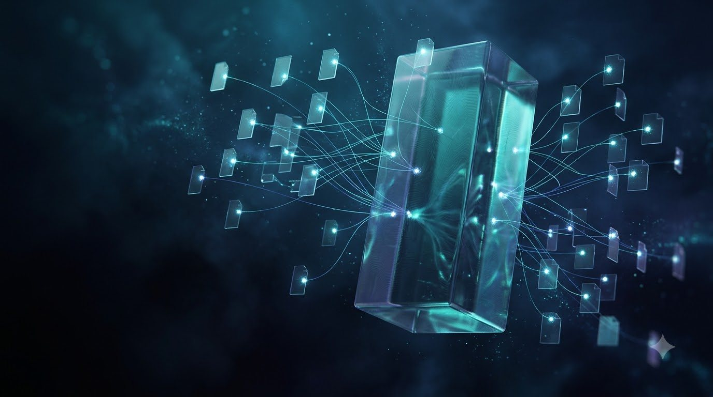

2020 · School
Class X
Don Bosco School, New Delhi
Secondary school with mathematics and science at the center. This is where the route toward engineering began.
Software & ML/AI engineer from New Delhi. I've optimized C++ at Cadence Design Systems, co-founded Anchorium, and I build trading engines that are tested before they're trusted.
(01) About
I'm a Computer Science undergrad at GGSIPU who likes problems with real stakes: compliance answers that have to be auditable, trades that have to be right, and C++ that has to be fast. At Cadence I cut a 2.5-day search to about 4 hours. At Anchorium I'm building multi-agent RAG for cross-border finance, and a trading engine that had to pass 29 of 29 tests before it was trusted with an order.
(02) Journey
Every milestone since school, in order. The line fills as you scroll.
2020 · School
Don Bosco School, New Delhi
Secondary school with mathematics and science at the center. This is where the route toward engineering began.
2022 · School
Don Bosco School, New Delhi
Senior secondary in the science stream, with Computer Science chosen as the next chapter.
2023 – 2027 · University
Guru Gobind Singh Indraprastha University, New Delhi
CGPA 8.52/10. Coursework in data structures & algorithms, machine learning, database systems and Python programming.
2025 · Certification
Oracle University
Validated fundamentals across AI/ML, model evaluation, neural networks and responsible AI.
Jul – Aug 2025 · Internship
Winnovation, New Delhi
Built an end-to-end house-price pipeline on 25,000+ rows and 19 features. Benchmarked 5+ models (Linear Regression, Random Forest, XGBoost and a Keras neural network) to a best RMSE of about $28K, and cut preprocessing time by about 40% with reusable Scikit-learn pipelines.
Dec 2025 – Mar 2026 · Program
Samsung Innovation Campus
A structured AI/ML program completed alongside university and Anchorium.
May – Jul 2026 · Industry
Cadence Design Systems, Noida
Optimized tap-to-node search across 700K+ taps and 350K+ patterns, from about 2.5 days to about 4 hours. Wrote and validated 200+ test cases, and used lexer and parser concepts in C++ to pull new parameters out of software reports, on RedHat Linux with Perforce.
Now · Venture
Pre-seed B2B fintech · Anchorium Works
Three products under one roof: the Omni-Engine for AI compliance, an automation agency, and Anchorium Trades. Early partnerships across real estate, hospitality, healthcare and education.
2027 · Next
Looking for Software Engineer, ML/AI Engineer or FinTech/Quant engineering roles.
Start a conversationData, markets and logs are mostly noise. The part I enjoy is building the filter that pulls the signal out and proves it's real.
(03) Selected work

01Anchorium · AI compliance01 · Anchorium · Co-founder
A self-hosted, multi-agent RAG system for Indian–US cross-border financial compliance. Every answer carries its citation trail.
02 · Anchorium · Python + C++
A hybrid Python + C++ intraday trading engine on Angel One SmartAPI. 17 of 18 trades won in a live paper session, and 29/29 tests passed before it went live.
03 · Anchorium · Co-founder
WhatsApp, Instagram and email automation for growing businesses: lead recovery, a CRM layer, and a human handoff the moment a customer replies.
04 · Open source · AI agent
An AI social-media agent that writes in your voice, emails every draft for approval and publishes on your schedule. Nothing goes out unapproved.
05 · Live · Recruiter tooling
Audits GitHub profiles and repositories the way a recruiter would, scoring structure, consistency, depth and professionalism from A+ to D.
06 · Live · End-to-end encryption
Real-time chat with end-to-end RSA encryption. The server relays ciphertext it can't read.
(03b) From the lab
RAG · Guardrails
An offline RAG assistant limited to knowledge from before 1900. Temporal guardrails refuse anachronistic questions before they reach the model.
Backend · Auth
A FastAPI backend with JWT auth, role-based access, analytics and a Pytest suite, plus a single-page dashboard served from the API.
Full-stack · Live
Flight booking with live seat maps, atomic multi-seat transactions, and a tier-priority waitlist that auto-assigns seats when someone cancels.
Deep learning
A TensorFlow/Keras neural network that flags fake Instagram profiles from 11 account features, with dropout-regularized dense layers.
ML pipeline · Winnovation
25,000+ rows, 19 features, 5+ models benchmarked. Best held-out RMSE was about $28K, and reusable pipelines made preprocessing about 40% faster.
Quant research · Testnet
Research tooling for perpetual markets: read-only scanning, paper simulation and offline replay. Every decision is forced to WAIT until an edge is proven.
(04) Workflows
Live pipelines of five systems I've built. Watch a request travel from input to verified output.
Why five agentsNarrow agents are easier to test and easier to audit than one prompt that does everything.
Why lineageNobody can sign off on a compliance answer without provenance. The graph makes every sentence traceable.
Why self-hostedSensitive financial documents stay inside the deployment instead of a third-party black box.
Two languagesPython for fast iteration and broker plumbing. C++ for the signal math, where speed matters.
Parity firstPaper and live logic are checked against each other on 19 points before anything goes live.
Result17 of 18 trades won and ₹22,496 net in one live paper session on a high-volatility stock.
EnvironmentC++ on RedHat Linux, with Perforce for version control, inside a production EDA codebase.
Speed with safetyGitHub Copilot sped up test generation. Every test was still written and validated by hand.
ImpactA job that used to take a weekend now finishes in an afternoon.
Human in the loopNothing publishes without approval. "Request changes" sends a rewritten draft back.
No stale approvalsEvery revision rotates the review link, so an outdated draft can never be approved by accident.
ResilientFalls back to a lighter Gemini model when the main one is overloaded or rate-limited.
Official railsDirect integration with Meta's WhatsApp Graph API. No unofficial scrapers.
Consent built inApproval-first templates with opt-out enforcement, so automation never turns into spam.
SectorsPartnerships across real estate, hospitality, healthcare and education.
(05) Toolkit
(06) Credentials
Built and lead Anchorium, a pre-seed venture spanning AI fintech compliance, a business-automation agency and an algorithmic trading system.
Achievement · Founder
Formed early partnerships for the automation agency across real estate, hospitality, healthcare and education.
Achievement · Business development
(07) Contact
I'm looking for Software Engineer, ML/AI Engineer and FinTech/Quant roles. Recruiters, founders and engineers are all welcome.
Case 01 · Anchorium · AI fintech compliance
A self-hosted, multi-agent AI system for Indian–US cross-border financial compliance, built so every answer can be traced to the source that justifies it.
Cross-border work between India and the US answers to two regulatory systems at once. A compliance team can't act on an AI answer it can't audit, and a hosted black-box model is a hard sell for sensitive financial documents.
Traceability is the difference between a chatbot and a tool an auditor can sign off on. The lineage graph makes the AI's reasoning reviewable line by line.
Case 02 · Anchorium · Python + C++
A hybrid Python + C++ intraday trading system on Angel One SmartAPI, with a verification layer strict enough to prove that paper and live logic behave the same.
Python is quick to write and slow to run, and trading logic needs both qualities. A strategy that behaves differently in paper and live modes is worse than no strategy at all.
17 / 18 trades won (94%) with ₹22,496 net profit in one live paper-trading session on a high-volatility stock. The test suite certified the system "Verified & Ready for Live Trading."
Paper-trading results from one session. Not investment advice.
Case 03 · Anchorium · Automation
A business-automation agency that designs, builds and runs customer-communication systems across WhatsApp, Instagram and email for growing businesses.
Growing businesses lose leads in the gap between the first message and the follow-up. Most automation either spams people or keeps them talking to a bot after they've asked for a person.
Early partnerships and business tie-ups across real estate, hospitality, healthcare and education.
Case 04 · Open source · AI agent
An AI social-media agent that learns how you write, drafts posts with images and short videos for X, LinkedIn, Instagram and Facebook, and publishes nothing until you approve it by email.
AI content tools are fast but off-brand, and auto-publishing without review is risky for a company account.
One-click deploy to Render with a managed Postgres database from the repository's blueprint.
Case 05 · Live · Recruiter tooling
Evaluates GitHub repositories and developer profiles the way a technical recruiter or senior engineer would. It computes structured signals first and uses AI to interpret them second.
Most tools grade code. Recruiters need to know whether a developer can be trusted in production.
Metrics come first and the model explains them, so the verdict is grounded in numbers you can check.
Case 06 · Live · Security
Real-time chat with end-to-end encryption. Messages are encrypted on the sender's device, and the server only ever relays ciphertext.
Most chat servers can read everything that passes through them. The goal was a relay that can't.
Where trust sits in a system decides most of its architecture: what the server stores, what it can see, and what it must never see.